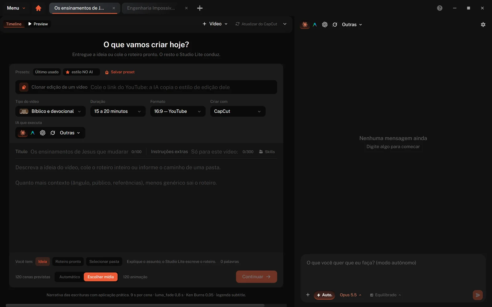
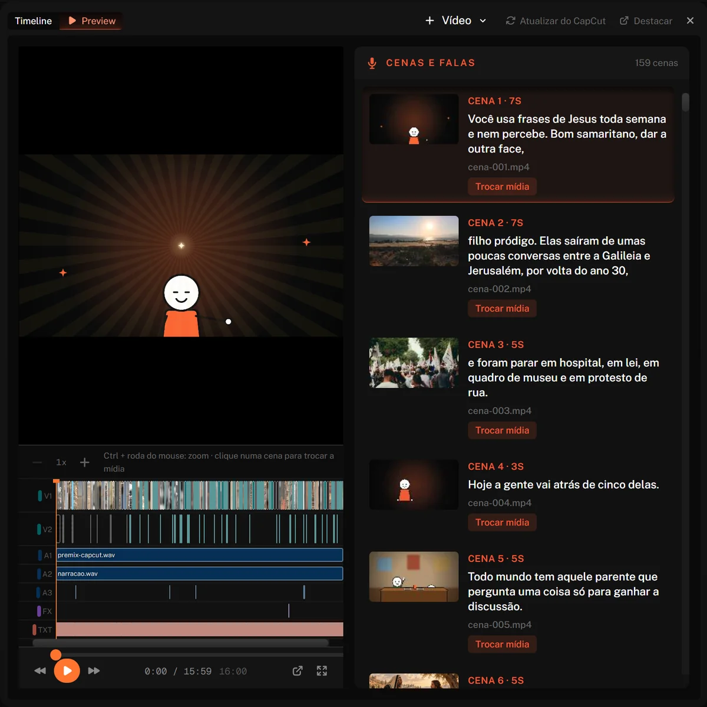
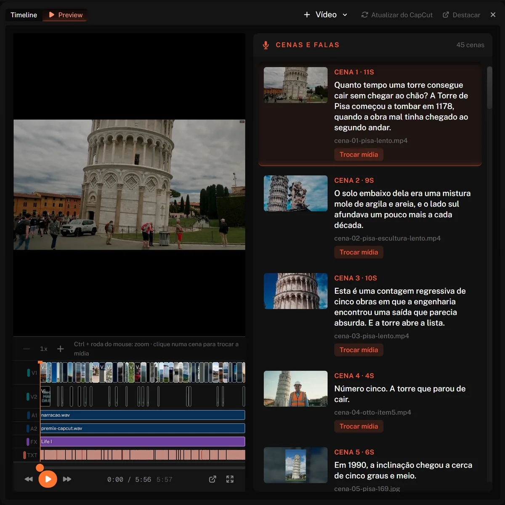
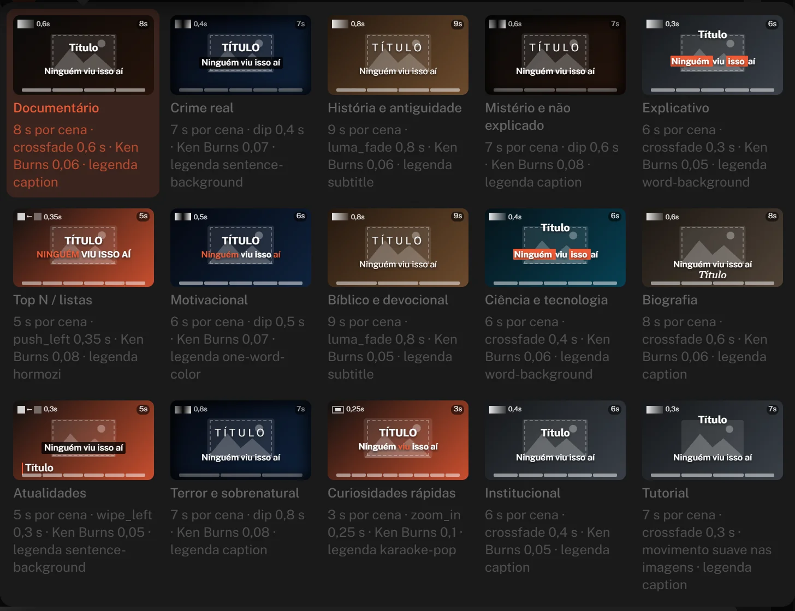
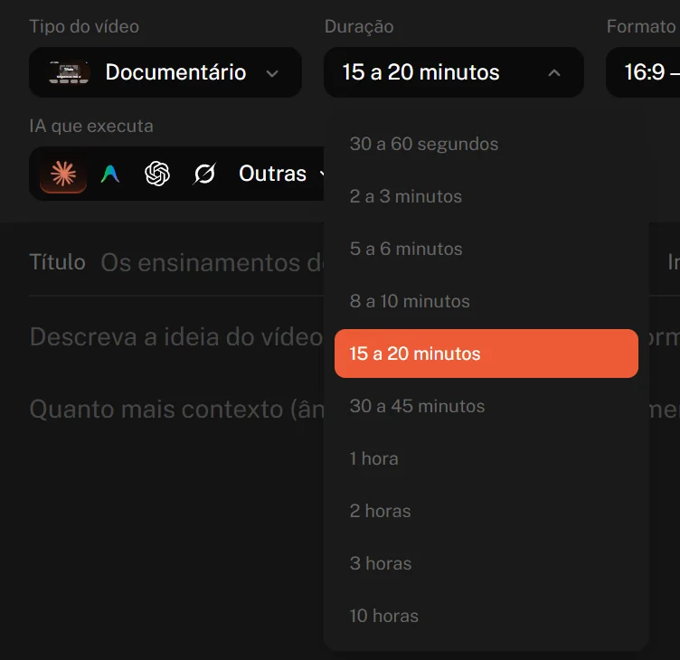
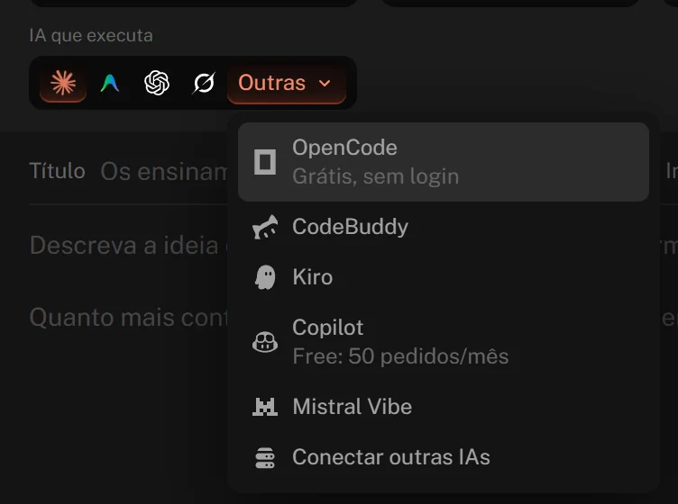
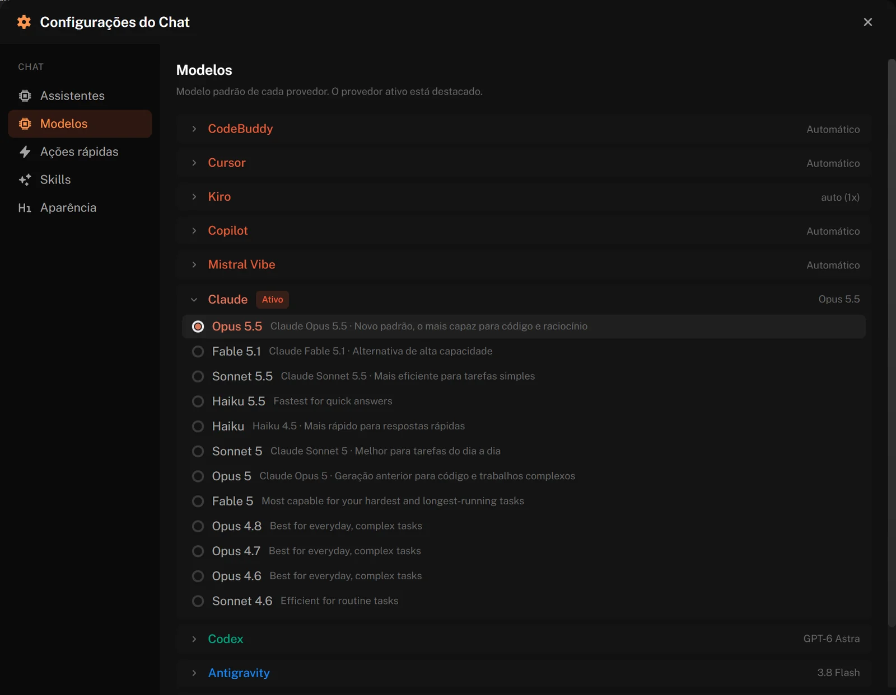
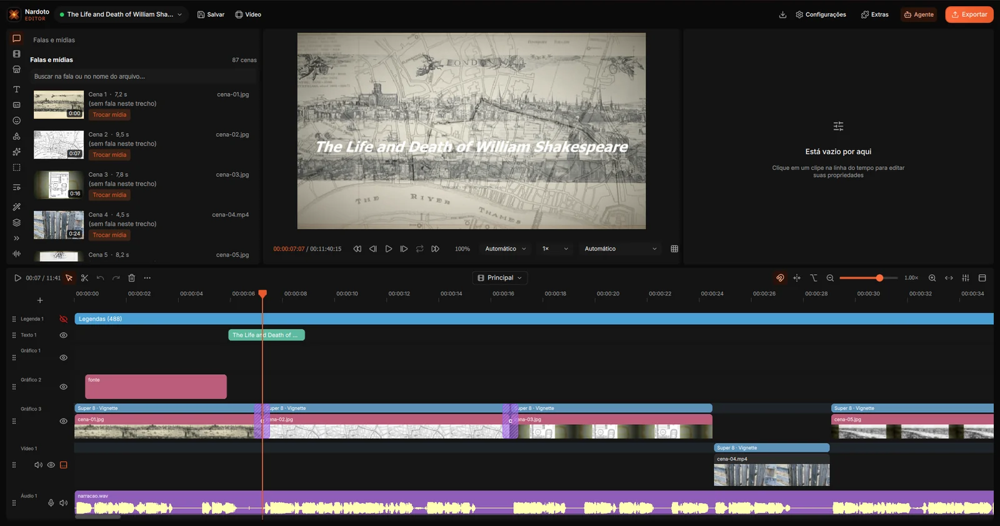

Você pede o vídeo.
O Studio Lite entrega pronto.
Veja o Studio Lite montando um vídeo do começo ao fim.
Entregue o título e a ideia, ou o roteiro pronto. O Studio Lite usa a IA que você já tem para escrever, narrar, buscar as mídias e montar o vídeo no Nardoto Editor ou no CapCut. Edição profissional e dinâmica, no automático.
Versão mais recente · Windows 10 e 11 (64 bits) · macOS 12 ou mais novo (Apple Silicon)
Mac com chip Intel? Baixe esta versão.
Do pedido ao vídeo pronto
Você conduz pelo painel ou pelo chat. O Studio Lite faz o trabalho pesado.
Você descreve
Título e ideia, ou o roteiro inteiro. Escolha o estilo, a duração e o formato.
A IA escreve e narra
O roteiro sai pronto e vira narração com voz natural, cena por cena.
As mídias chegam sozinhas
Fotos, filmagens reais, animações e trilha, encaixadas no ritmo da fala.
Montado no editor
O vídeo abre no Nardoto Editor ou no CapCut, com legenda e motion graphics, pronto para exportar.
Por dentro do Nardoto Studio Lite
Clique em qualquer imagem para ver de perto.








Monta no editor grátis,
ou no CapCut.
O Studio Lite pensa e monta o vídeo. A mesa de montagem é o Nardoto Editor, grátis e sem marca-d'água, ou o CapCut, se você já trabalha nele. Você confere, ajusta e exporta.
Comece hoje
O Studio Lite vem junto com a assinatura do Nardoto Studio, pelo mesmo valor.
Assinatura do Nardoto Studio
- Nardoto Studio e Studio Lite
- Vídeos ilimitados, sem marca-d'água
- Edição profissional e dinâmica
- Monta no Nardoto Editor ou no CapCut
Já sou assinante
Baixe, entre com a sua conta e comece a criar.
Baixar para Windows Baixar para MacVersão mais recente · Windows 10 e 11 (64 bits) · macOS 12 ou mais novo
Mac com chip Intel? Baixe esta versão.
xattr -cr "/Applications/Nardoto Studio Lite.app". Se ainda bloquear, vá em Ajustes do Sistema, Privacidade e Segurança, e clique em Abrir mesmo assim.
Perguntas frequentes
O Studio Lite é grátis?
Não. Ele vem junto com a assinatura do Nardoto Studio, por R$ 197,00 por mês: quem assina o Studio usa os dois. Quem é grátis é o Nardoto Editor, onde o vídeo é montado.
Tem limite de vídeos?
Não. É ilimitado e sem marca-d'água: faça quantos vídeos quiser, do tamanho que precisar.
Preciso pagar uma IA à parte?
Você usa a IA que já tem, como Claude, Codex ou Gemini. Também funciona com opções grátis, como OpenCode e o plano grátis do Copilot.
Onde o vídeo é montado?
No Nardoto Editor, que é grátis, ou no CapCut. Você escolhe na hora de criar e ajusta o que quiser antes de exportar.
Que tipos de vídeo dá para fazer?
Documentário, crime real, história, mistério, explicativo, listas, motivacional, bíblico, ciência, biografia, atualidades, terror, curiosidades, institucional e tutorial. De 30 segundos a 10 horas, para YouTube, Shorts, Reels ou feed.
Funciona no Mac?
Sim. O Studio Lite roda no Windows 10 e 11 (64 bits) e no macOS 12 ou mais novo, tanto nos Macs com chip Apple (M1 em diante) quanto nos com chip Intel. A assinatura é a mesma nos dois.